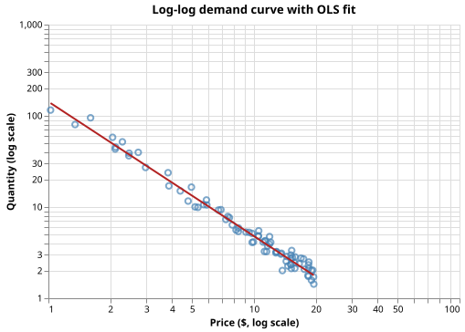

Estimating Price Elasticity of Demand
30.1 The Problem
- The price elasticity of demand measures how sensitive consumer demand is to price changes
- If the price rises by 1%, how many fewer units are sold?
- Formally:
\[\varepsilon = \frac{\partial \ln Q}{\partial \ln P} = \frac{P}{Q} \frac{dQ}{dP}\]
- \(\varepsilon < -1\): demand is elastic — a 1% price increase causes more than a 1% drop in quantity
- \(-1 < \varepsilon < 0\): demand is inelastic — quantity is relatively insensitive to price
- \(\varepsilon = -1\): unit elastic — price and quantity move in equal and opposite proportions
A product has estimated price elasticity \(\varepsilon = -2.0\). If the price increases by 10%, what happens to quantity demanded?
- Quantity decreases by 2%.
- Wrong: elasticity multiplies the percentage change in price, not adds to it.
- Quantity decreases by 20%.
- Correct: \(\Delta Q / Q \approx \varepsilon \times \Delta P / P = -2.0 \times 10\% = -20\%\).
- Quantity increases by 20% because supply adjusts.
- Wrong: price elasticity of demand describes consumer response, not supplier response.
- Quantity is unchanged because consumers need the product regardless of price.
- Wrong: that would describe a perfectly inelastic good (\(\varepsilon = 0\)), not one with \(\varepsilon = -2\).
30.2 The Log-Log Model
- A power-law demand curve \(Q = A P^\varepsilon\) becomes linear after taking logarithms:
\[\ln Q = \ln A + \varepsilon \ln P\]
- This means \(\varepsilon\) is the ordinary least squares slope in log-log space: fitting \(y = a + bx\) where \(y = \ln Q\) and \(x = \ln P\) directly estimates the elasticity as the slope \(b\)
- The intercept \(a = \ln A\) gives the log of the demand intercept, but is rarely reported by itself.
30.3 Ordinary Least Squares in Log-Log Space
- Transforming prices and quantities to logs reduces the nonlinear power-law model to a straight line, so standard OLS applies:
\[\hat{\varepsilon} = \frac{\sum_i (\ln P_i - \overline{\ln P})(\ln Q_i - \overline{\ln Q})}{\sum_i (\ln P_i - \overline{\ln P})^2}\]
- The standard error of \(\hat{\varepsilon}\) is:
\[\text{SE}(\hat{\varepsilon}) = \sqrt{\frac{\text{RSS}/(n-2)}{\sum_i (\ln P_i - \overline{\ln P})^2}}\]
- \(\text{RSS} = \sum_i (\ln Q_i - \hat{a} - \hat{\varepsilon} \ln P_i)^2\) is the residual sum of squares
- A 95% confidence interval is \(\hat{\varepsilon} \pm t_{0.975,\,n-2} \cdot \text{SE}(\hat{\varepsilon})\)
def log_log_ols(prices, quantities):
"""Fit log(quantity) = intercept + slope * log(price) by ordinary least squares.
OLS formulas:
slope = sum[(x_i - x_mean)(y_i - y_mean)] / sum[(x_i - x_mean)^2]
intercept = y_mean - slope * x_mean
SE(slope) = sqrt(RSS / (n - 2)) / sqrt(sum[(x_i - x_mean)^2])
The 95% confidence interval uses the t-distribution with n - 2 degrees of freedom.
A large SE relative to the slope indicates a poorly constrained estimate.
Returns (intercept, slope, se_slope, ci_low, ci_high).
"""
x = np.log(prices)
y = np.log(quantities)
n = len(x)
x_mean = np.mean(x)
y_mean = np.mean(y)
ss_xx = np.sum((x - x_mean) ** 2)
ss_xy = np.sum((x - x_mean) * (y - y_mean))
slope = ss_xy / ss_xx
intercept = y_mean - slope * x_mean
residuals = y - (intercept + slope * x)
rss = np.sum(residuals**2)
# Residual standard error: sqrt(RSS / (n - 2))
se_slope = np.sqrt(rss / (n - 2) / ss_xx)
t_crit = t_dist.ppf(0.975, df=n - 2)
ci_low = slope - t_crit * se_slope
ci_high = slope + t_crit * se_slope
return intercept, slope, se_slope, ci_low, ci_highPut these log-log OLS steps in the correct order.
- Compute \(x_i = \ln P_i\) and \(y_i = \ln Q_i\) for each observation
- Compute \(\bar{x}\) and \(\bar{y}\), then \(SS_{xx}\) and \(SS_{xy}\)
- Estimate slope \(\hat{\varepsilon} = SS_{xy} / SS_{xx}\) and intercept \(\hat{a} = \bar{y} - \hat{\varepsilon}\bar{x}\)
- Compute residuals \(e_i = y_i - (\hat{a} + \hat{\varepsilon} x_i)\) and RSS \(= \sum e_i^2\)
- Report \(\hat{\varepsilon}\) with 95% CI using \(t_{0.975,\,n-2} \cdot \text{SE}(\hat{\varepsilon})\)
30.4 Generating Synthetic Data
- Prices are drawn uniformly from \([1, 20]\) dollars
- Log-quantities are generated from the power-law model plus Gaussian noise in log space
- Noise in log space is equivalent to multiplicative noise in original space
- Each observed quantity is \(Q_i = A P_i^\varepsilon \cdot e^{\epsilon_i}\), where \(\epsilon_i \sim N(0, \sigma^2)\)
SEED = 7493418 # RNG seed for reproducibility
N_POINTS = 80 # number of price-quantity observations
TRUE_ELASTICITY = -1.5 # true price elasticity (slope in log-log space)
TRUE_INTERCEPT = 5.0 # true log-scale intercept
PRICE_MIN = 1.0 # minimum price ($)
PRICE_MAX = 20.0 # maximum price ($)
# Log-quantity noise: chosen so that ~95% of observed quantities fall within
# exp(±2 * NOISE_STD) ≈ ±35% of the true quantity at each price.
NOISE_STD = 0.15def make_elasticity_data(
n=N_POINTS,
true_elasticity=TRUE_ELASTICITY,
true_intercept=TRUE_INTERCEPT,
price_min=PRICE_MIN,
price_max=PRICE_MAX,
noise_std=NOISE_STD,
seed=SEED,
):
"""Return a Polars DataFrame with columns 'price' and 'quantity'.
Prices are drawn uniformly from [price_min, price_max].
Log-quantities follow:
log(quantity) = true_intercept + true_elasticity * log(price) + noise
where noise ~ N(0, noise_std^2), so quantities are log-normally distributed
around the true power-law demand curve.
"""
rng = np.random.default_rng(seed)
prices = rng.uniform(price_min, price_max, n)
log_quantities = (
true_intercept
+ true_elasticity * np.log(prices)
+ rng.normal(0.0, noise_std, n)
)
quantities = np.exp(log_quantities)
return pl.DataFrame({"price": prices, "quantity": quantities})30.5 Fitting and Reporting the Elasticity
def plot_loglog(prices, quantities, intercept, slope, filename):
"""Save a log-log scatter plot with the fitted OLS line.
Both axes are on a log scale. The fitted curve is the power-law:
quantity = exp(intercept) * price^slope
shown as a straight line in log-log space.
"""
df = pl.DataFrame({"price": prices, "quantity": quantities})
scatter = (
alt.Chart(df)
.mark_point(color="steelblue", opacity=0.7, size=40)
.encode(
x=alt.X(
"price:Q", scale=alt.Scale(type="log"), title="Price ($, log scale)"
),
y=alt.Y(
"quantity:Q", scale=alt.Scale(type="log"), title="Quantity (log scale)"
),
)
)
p_range = np.linspace(prices.min(), prices.max(), 200)
q_fit = np.exp(intercept) * p_range**slope
fit_df = pl.DataFrame({"price": p_range, "quantity": q_fit})
fit_line = (
alt.Chart(fit_df)
.mark_line(color="firebrick", strokeWidth=2)
.encode(x="price:Q", y="quantity:Q")
)
chart = alt.layer(scatter, fit_line).properties(
width=450, height=300, title="Log-log demand curve with OLS fit"
)
chart.save(filename)
- The confidence interval \([-1.518, -1.430]\) is narrow because the noise (\(\sigma = 0.15\) in log space) is small relative to the price variation
- A wide confidence interval (or one that includes zero) indicates insufficient price variation in the data to estimate elasticity reliably
30.6 Testing
- Noise-free recovery
- With no noise, OLS returns the exact true slope and intercept to within \(10^{-6}\) (relative). Any deviation is a bug in the OLS formula rather than a sampling artefact.
- Noisy slope within 10% of true value
- With \(\sigma = 0.15\) and \(n = 80\), the theoretical SE of the slope is approximately 0.02. Ten percent of \(|\varepsilon| = 1.5\) equals 0.15, giving a safety factor of roughly 7.5 over the expected sampling error, so the test should pass for any reasonable random seed.
- Negative elasticity
- Any estimated slope for downward-sloping demand must be negative. A positive slope would indicate data generation or formula errors because prices and quantities are negatively correlated by construction.
- 95% CI contains true value
- With the fixed seed 7493418, the CI \([-1.518, -1.430]\) reliably contains the true value \(-1.5\). This test would fail only with data where the noise draw happens to be extreme, which the fixed seed rules out.
import numpy as np
import pytest
from generate_elasticity import make_elasticity_data, TRUE_ELASTICITY, TRUE_INTERCEPT
from elasticity import log_log_ols
def test_noise_free_slope_recovery():
# With no noise, OLS must recover the true slope to near machine precision.
# We use a generous relative tolerance of 1e-6 to allow for floating-point
# arithmetic, which is far tighter than the noise-corrupted case (< 10%).
prices = np.linspace(1.0, 20.0, 60)
log_quantities = TRUE_INTERCEPT + TRUE_ELASTICITY * np.log(prices)
quantities = np.exp(log_quantities)
_, slope, _, _, _ = log_log_ols(prices, quantities)
assert slope == pytest.approx(TRUE_ELASTICITY, rel=1e-6)
def test_noise_free_intercept_recovery():
prices = np.linspace(1.0, 20.0, 60)
log_quantities = TRUE_INTERCEPT + TRUE_ELASTICITY * np.log(prices)
quantities = np.exp(log_quantities)
intercept, _, _, _, _ = log_log_ols(prices, quantities)
assert intercept == pytest.approx(TRUE_INTERCEPT, rel=1e-6)
def test_noisy_slope_within_ten_percent():
# With Gaussian log-quantity noise (std=0.15) and 80 observations,
# the OLS slope must land within 10% of the true value.
# The theoretical SE of the slope is roughly noise_std / sqrt(SS_xx),
# where SS_xx grows with n; 10% of |TRUE_ELASTICITY| = 0.15 gives
# a safety factor of ~3 over the expected SE ≈ 0.04.
df = make_elasticity_data()
prices = df["price"].to_numpy()
quantities = df["quantity"].to_numpy()
_, slope, _, _, _ = log_log_ols(prices, quantities)
assert abs(slope - TRUE_ELASTICITY) / abs(TRUE_ELASTICITY) < 0.10
def test_elasticity_is_negative():
# Normal demand: higher price → lower quantity → negative slope in log-log space.
df = make_elasticity_data()
prices = df["price"].to_numpy()
quantities = df["quantity"].to_numpy()
_, slope, _, _, _ = log_log_ols(prices, quantities)
assert slope < 0.0
def test_confidence_interval_contains_true_value():
# The 95% CI should contain the true elasticity.
# With a well-specified model and n=80 points this should virtually always hold;
# it fails only in extreme noise draws that do not occur with seed 7493418.
df = make_elasticity_data()
prices = df["price"].to_numpy()
quantities = df["quantity"].to_numpy()
_, _, _, ci_low, ci_high = log_log_ols(prices, quantities)
assert ci_low < TRUE_ELASTICITY < ci_highPrice elasticity key terms
- Price elasticity of demand \(\varepsilon\)
- \(\partial \ln Q / \partial \ln P\); the percentage change in quantity demanded for a 1% change in price; negative for normal goods
- Elastic demand (\(|\varepsilon| > 1\))
- Quantity is highly responsive to price; a 1% price rise causes more than a 1% drop in sales
- Inelastic demand (\(|\varepsilon| < 1\))
- Quantity is insensitive to price; consumers buy approximately the same amount regardless of small price changes
- Log-log regression
- A linear regression of \(\ln Q\) on \(\ln P\); the OLS slope directly estimates the elasticity exponent of the underlying power-law demand curve
- Residual standard error
- \(\sqrt{\text{RSS}/(n-2)}\); estimates the noise in log-quantity; together with price variation it determines the precision of the elasticity estimate
30.7 Exercises
30.7.1 Do the math
Using \(\ln Q = a + \varepsilon \ln P\) with \(a = 5\) and \(\varepsilon = -1.5\), compute \(\ln Q\) when \(P = e\) (Euler’s number, so \(\ln P = 1\)). What is the corresponding elasticity (the slope of the log-log line)?
30.7.2 Residual diagnostics
Plot the OLS residuals \(e_i = \ln Q_i - \hat{a} - \hat{\varepsilon} \ln P_i\) against \(\ln P_i\). If the log-log model is correct, the residuals should show no trend and no heteroscedasticity (variance should be roughly constant across prices). Modify make_elasticity_data to introduce heteroscedasticity (noise that increases with price) and show how the residual plot reveals it.
30.7.3 Weighted least squares
If measurement variance is known to be proportional to price (\(\text{Var}(\epsilon_i) = \sigma^2 P_i\)), ordinary OLS is inefficient. Implement weighted OLS by minimising \(\sum_i w_i (y_i - \hat{a} - \hat{\varepsilon} x_i)^2\) with weights \(w_i = 1/P_i\). Compare the standard errors of the WLS and OLS estimates on heteroscedastic data.
30.7.4 Two-stage price endogeneity correction
In observational data, price is not set randomly — firms charge more when demand is high, creating a spurious correlation. Instrumental variables estimation uses an instrument \(Z\) correlated with price but uncorrelated with the demand shock. Simulate endogenous prices by adding a common demand shock to both price and log-quantity, then show that OLS overestimates \(|\varepsilon|\) while two-stage least squares (using a cost instrument) recovers the true elasticity.
30.7.5 Bootstrap confidence intervals
The OLS confidence interval assumes normally distributed residuals. Implement a bootstrap estimate: resample the 80 observations with replacement, fit the log-log model to each resample, and take the 2.5th and 97.5th percentiles of the 1000 bootstrapped slopes as the CI. Compare the bootstrap CI with the analytic CI; do they agree closely for the synthetic data?